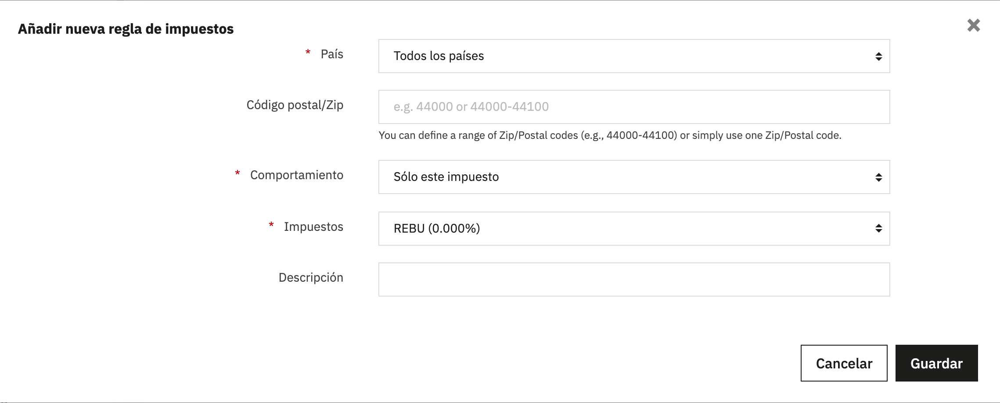
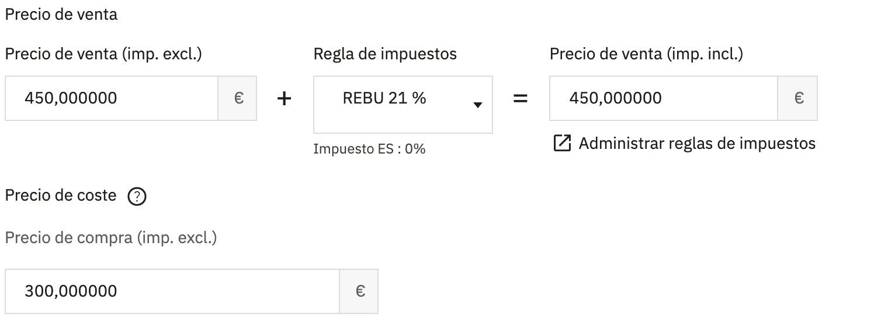
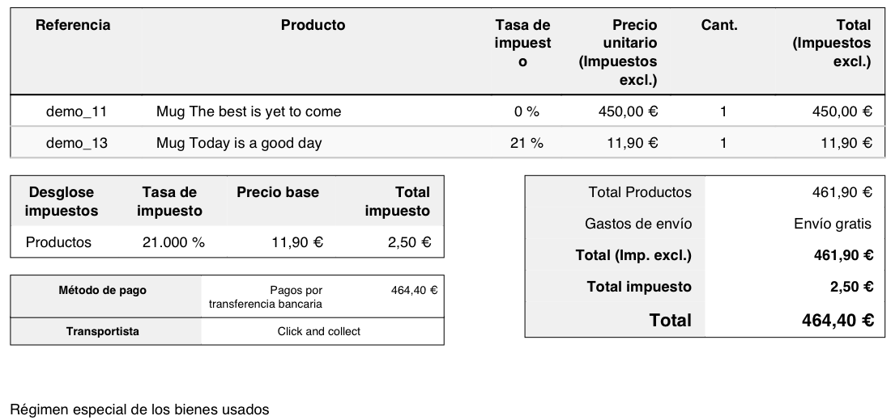

Antes de empezar
El REBU se aplica a la venta de bienes muebles usados que se pueden volver a utilizar. Que una pieza concreta pueda ir por el REBU depende de a quién se la compraste (artículo 135 de la ley): el caso típico es la compra a un particular. Por eso eres tú quien marca qué artículos van por este régimen; ninguna herramienta lo puede saber.
Lo que vas a montar usa solo funciones que PrestaShop ya trae. Los artículos de segunda mano se venden sin sumarles IVA, porque el IVA del margen ya va dentro del precio. La factura lleva la mención obligatoria. Cada venta guarda lo que te costó la pieza. Y cada trimestre sacas un archivo con tus ventas para calcular la base del margen.
Esta guía te ayuda a calcular y documentar, no es asesoramiento fiscal. Decidir si aplicas el REBU, a qué artículos y cómo lo declaras os corresponde a ti y a tu asesor. Enséñale esta configuración antes de usarla.
Configúralo en cinco pasos
Comprobado en tiendas de prueba PrestaShop 9.2.0 (2 de octubre de 2026) y 8.2.8 (3 de octubre), con los menús en castellano. Los menús son los mismos en las dos versiones.
-
Crea un impuesto «REBU» al 0 %
Ve a Internacional›Impuestos y pulsa Añadir nuevo impuesto.
- Nombre
- REBU
- Tasa
- 0
- Activar
- Sí
Hace falta aunque parezca raro. PrestaShop solo deja elegir en un producto los grupos de impuestos que tienen al menos un impuesto activo dentro; un grupo vacío no aparece en la lista.
-
Crea el grupo «REBU 21 %»
En la misma sección, abre la pestaña Reglas de impuestos y pulsa Añadir nuevo grupo de reglas de impuestos. Ponle de nombre REBU 21 %, actívalo y pulsa Guardar y permanecer.
Debajo aparece el botón Add a tax rule (en la 9.2 sale en inglés). Rellena la ventana así y guarda:

País: Todos los países. Comportamiento: Sólo este impuesto. Impuestos: REBU (0.000%). Se crea una regla para cada país, todas al 0 %. En PrestaShop 8 no sale una ventana: la regla se añade en el formulario «Nueva regla de impuestos» que aparece debajo del grupo, con los mismos valores (País: Todas) y el botón «Guardar y permanecer».
Si alguno de tus artículos de segunda mano lleva un tipo reducido, crea también REBU 10 % o REBU 4 % de la misma forma. El número del nombre es el tipo que la calculadora aplicará al margen.
-
Pon el grupo y el coste en cada artículo de segunda mano
En Catálogo›Productos, abre el artículo y ve a la pestaña Precio.
- Regla de impuestos: REBU 21 % (o el que toque).
- Precio de venta: el precio final. Como el impuesto es del 0 %, el precio con impuestos y sin impuestos coinciden. El IVA del margen ya va dentro.
- Precio de coste: lo que pagaste por esa pieza. PrestaShop lo guarda en cada pedido tal como estaba en el momento de la venta.

Un artículo de prueba: se vende por 450 €, costó 300 € y no se le suma IVA. El precio de coste es uno por producto. Si tienes varias piezas iguales que te costaron distinto, actualiza el coste antes de vender cada una, o corrígelo después línea a línea en la calculadora.
-
Añade la mención a la factura
En Pedidos›Facturas, baja hasta Opciones de factura y escribe en Texto legal libre:
Es la mención que exige el Reglamento de facturación (RD 1619/2012, artículo 6.1.o). Sale en la factura debajo del método de pago. Si tu tienda tiene varios idiomas, el campo lleva un selector de idioma a la derecha: rellénalo en cada uno, porque la factura sale en el idioma del pedido. Al instalar un idioma nuevo, PrestaShop copia el texto que hubiera, así que revísalo.
Con esto, la factura no desglosa IVA en esos artículos, como pide el artículo 138 de la ley. Mira en qué cubre y qué no cómo queda la factura exactamente.
-
Saca cada trimestre el archivo de ventas con el coste
La exportación normal de pedidos no trae el coste. Para sacarlo, ve a Parámetros Avanzados›Base de datos, pestaña Gestor SQL, y pulsa Añadir una nueva consulta SQL. Ponle un nombre, por ejemplo «Pedidos para la calculadora REBU», pega esta consulta y guarda:
Consulta para el Gestor SQLSELECT o.id_order AS pedido, o.reference AS referencia, o.invoice_number AS factura, o.invoice_date AS fecha_factura, od.product_name AS producto, od.product_quantity AS unidades, od.product_quantity_refunded AS devueltas, od.total_price_tax_incl AS venta_total, od.original_wholesale_price AS coste_unitario, trg.name AS grupo_impuestos, od.tax_rate AS iva_tienda FROM ps_order_detail od INNER JOIN ps_orders o ON o.id_order = od.id_order LEFT JOIN ps_tax_rules_group trg ON trg.id_tax_rules_group = od.id_tax_rules_group WHERE o.valid = 1 AND o.invoice_number > 0 ORDER BY o.invoice_date, o.id_orderEn la lista de consultas, el botón con la nube la exporta. PrestaShop descarga un archivo llamado
request_sql_1.csv(el número cambia) con todas las líneas de los pedidos válidos que tienen factura.Si en la «Lista de tablas de MySQL» de esa misma pantalla tus tablas no empiezan por
ps_, cambiaps_por tu prefijo en las tres tablas de la consulta.
Calcula la base de cada trimestre
Sube el archivo a la calculadora. Separa tus ventas por trimestre (según la fecha de la factura) y por tipo de IVA, y te da la base imponible del margen y su cuota. Reconoce solas las líneas del grupo REBU y deja fuera las de productos nuevos.
- Margen = precio de venta − lo que te costó. Los dos, con todo lo que pagaste.
- Base imponible = margen × 100 / (100 + tipo). Es el margen sin el IVA que lleva dentro.
- Margen negativo: la base es 0 y no se resta de otras ventas. Así funciona el método de operación a operación, que es el que usa la calculadora.
Puedes corregir el coste o el precio de cualquier línea, desmarcar las que no vayan por el REBU y descargar el detalle para tu asesor. El archivo se lee en tu navegador y no sale de tu ordenador.
Abrir la calculadora Ver un ejemplo
Qué cubre este apaño y qué no
Lo hemos probado con un pedido real que mezclaba una pieza de segunda mano y un producto nuevo, enviado a Francia. Así quedó la factura que generó PrestaShop:

Lo que resuelve
- No se suma IVA a los artículos REBU, tampoco el del país de destino si vendes a otro país de la UE.
- La factura no desglosa cuota en esos artículos y lleva la mención obligatoria.
- Cada venta guarda lo que costó la pieza.
- La base del margen por trimestre y tipo, con el método de operación a operación.
Lo que no
- La factura pone «0 %» en la columna de impuesto de la pieza REBU. No es una cuota, pero coméntalo con tu asesor.
- La mención sale en todas las facturas, también en las que solo llevan productos nuevos.
- Los cupones de descuento y los gastos de envío no entran en la consulta. Si los usas, ajusta la venta en la calculadora.
- El método global, los abonos y el documento de cada compra a un particular. Pregúntale a tu asesor cómo los llevas.
- Si usas un módulo de Verifactu, confirma con su proveedor cómo trata las ventas en REBU.
Preguntas frecuentes
¿PrestaShop trae el REBU de serie?
No. PrestaShop solo calcula el IVA sobre el precio. La petición para que lo incluya, la issue 24231 de su repositorio, sigue abierta desde 2021. Esta guía lo resuelve con funciones que PrestaShop ya trae.
¿Por qué el grupo se llama «REBU 21 %» si el impuesto es del 0 %?
El 0 % es lo que PrestaShop suma al precio: nada, porque el IVA del margen ya va dentro. El 21 % es el tipo que aplicarás al margen en tu declaración. La calculadora lee ese número del nombre del grupo.
¿Qué pasa si vendo una pieza por menos de lo que me costó?
En el método de operación a operación, el margen negativo da una base de 0 y no se compensa con otras ventas. La calculadora lo aplica así y te lo señala.
¿Y si vendo productos nuevos y usados en la misma tienda?
Funciona: los nuevos siguen con su grupo de IVA normal y la calculadora los deja fuera. Lo único que no puedes evitar es que la mención salga en todas las facturas, porque el texto legal libre es el mismo para todas las facturas de un idioma.
¿Funciona en PrestaShop 8?
Sí. La guía está comprobada en PrestaShop 8.2.8 y 9.2.0, con pedidos y facturas reales. Los menús son los mismos; la única diferencia es que en la 8 la regla de impuestos se añade en un formulario debajo del grupo, no en una ventana.
¿Se envían mis pedidos a algún sitio?
No. La calculadora lee el archivo en tu navegador y hace las cuentas allí mismo. No se envía ni se guarda en ningún servidor. Esta web tampoco usa cookies ni herramientas de analítica.